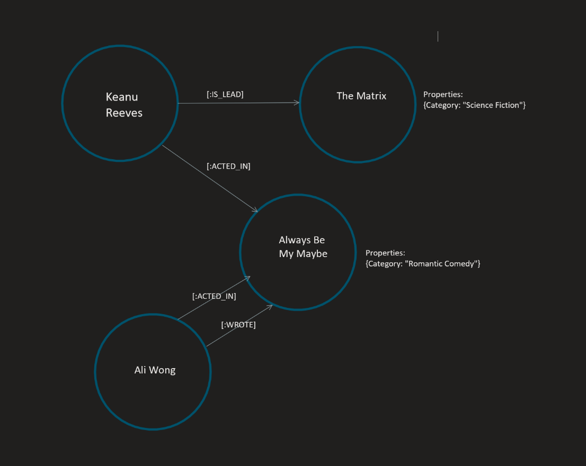

Databases are organized collections of data. There are lots of different ways to organize this data. Graph databases focus on the relationships between the data rather than the data itself. A graph database is organized in a network. Data is represented in nodes, properties, tags, and edges. Advantages of graph databases are performance, flexibility, and agility. Graph databases are simple and have fast retrieval. They are scalable and adapt to new business requirements much easier than databases using the relational model. The database schema can be altered, where a relational database would need to follow the schema it was built using. Neo4j.com lists 5 areas graph databases are being used: fraud detection, real time recommendation engines, master data management, network/IT operations, and identity and access management.
Graph databases do not have an official query language, but many use SPARQL, like Amazon Neptune, IBM DB2, and Allegro. Neo4j uses Cypher, which “is a declarative, SQL-inspired language for describing visual patterns in graphs using ASCII-Art syntax” ( Cypher Query Language Developer Guides & Tutorials, n.d.).
Current attitudes in business seem to align with the idea that one should choose a database based off the data model, rather than try to fit the data into a relational model. Recently, graph databases have seen a surge in popularity because they can handle some of the complex questions easier than a relational database would.
For example, say you want to know the name of that one romantic comedy that had the actor/writer and the actor that played the lead in “The Matrix”.
With the graph model, you would first locate the “The Matrix” movie node, as seen in figure 1.0.
You would then follow the “lead” edge to find the node “Keanu Reeves”, the actor who played the lead in The Matrix.
You would find all the movies Keanu Reeves has also acted in, and then filter those movies with the category “romantic comedies”.
Then you would take those results and write a query that looks for a movie that had an actor lead and write in the movie.

Figure 1.0: The graph model simplifies some queries that would get very complex in a relational database using SQL.
This would involve plenty of complex queries in a relational model but is rather simple with the graph model. However, there are plenty of situations where a SQL database makes more sense for the business.
Currently, the OMIS Academic Advisor meets face to face with dozens of students a day, discussing their schedules for next semester. There are a fixed number of classes; and only so many unique combinations of courses being offered, enrolled in, and counting towards specific degrees. There is no true data stored on the courses at NIU, even a CSV file with the course names, numbers, and descriptions. Instead, we were told to use the course catalog.
Without a logical way to store this data, we are forced to rely on human brain power to perform these complex queries quickly and accurately every time.
By creating a graph database to represent the relationships between the courses in the OMIS department, we are providing a faster, more accurate system for students to use when trying to select their classes. This also removes stress on the academic advisor. By having students use this system for easy course scheduling questions, we free up time the academic advisor can now use to do other things in their job description.